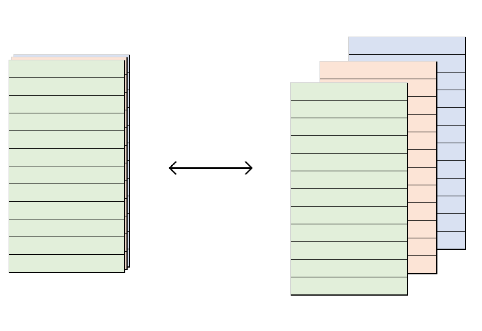
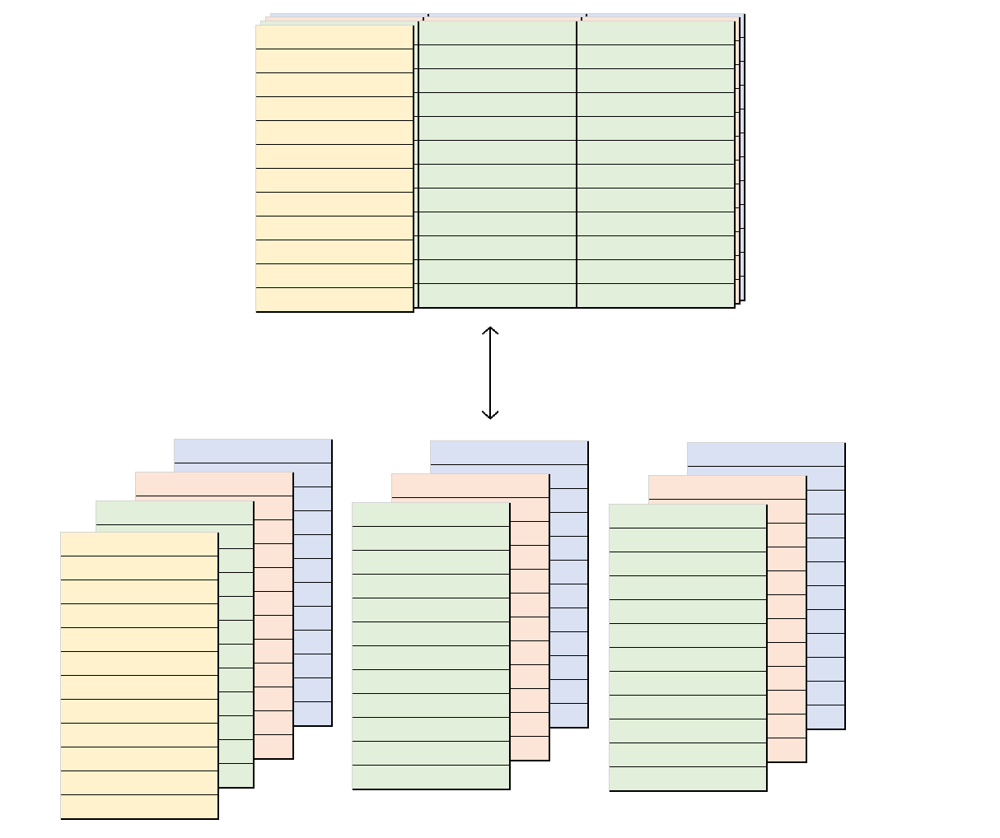

When producing summary tables, it is very common to include multiple columns which relay the same (or very similar) information in different formats. Take, for instance, a simple frequency cross-tabulation: one will very often include not only the (row, column or cell) proportion but the raw and/or base counts too. Thus, one might do something like this:
# Proportions on their own
mytab <- table(mtcars$am, mtcars$cyl)
ftable(signif(prop.table(mytab, 2), 2))
#> 4 6 8
#>
#> 0 0.27 0.57 0.86
#> 1 0.73 0.43 0.14
# Proportions along with the raw counts
mytab[1:length(mytab)] <- paste0(
signif(prop.table(mytab, 2), 2),
" (", mytab, ")"
)
ftable(mytab)
#> 4 6 8
#>
#> 0 0.27 (3) 0.57 (4) 0.86 (12)
#> 1 0.73 (8) 0.43 (3) 0.14 (2)It makes sense to think of a table like the second one above as displaying a primary statistic (a proportion) along with ancillary metadata (a raw count). This is, fundamentally, how projectable approaches summary tables in general. In the world of projectable, there is a very tight relationship between a summary table which shows proportions only and one which shows proportions along with raw and/or base counts: they are projections of one and the same metadata-rich table-like object. What follows is intended to explain what that means.
The projectable_col class
At the ground level, projectable implements a range of projectable_col vectors which each store a primary statistic (like a proportion) alongside supplementary pieces of metadata (like raw and base counts). These are the building blocks for summary tables.
To create a projectable_col, we use the col_*() functions like col_freq():
library(projectable)
x <- col_freq(n = rep(1, 5), N = c(1:5), summarised = TRUE)
x
#> <col_freq[5]>
#> [1] 1.00 0.50 0.33 0.25 0.20Although superficially one dimensional, these vectors can be thought of as having two dimensions: length and depth. Running down their length, we pass through statistics corresponding to different objects (e.g. different aggregates of an underlying dataset); running along their depth, we pass through different pieces of data related to the one primary statistic for a given object.
Thus, the col_freq above has a length of 5: it stores the frequency of 5 different things. But it also holds 3 different pieces of data for each entry: a p, an n and an N.

The hidden dimensionality of a projectable_col becomes obvious when we ‘flatten it out’ by turning it into a dataframe that is as wide as the projectable_col is deep:
out <- prj_project_col(x)
knitr::kable(out)| n | N | p |
|---|---|---|
| 1 | 1 | 1.0000000 |
| 1 | 2 | 0.5000000 |
| 1 | 3 | 0.3333333 |
| 1 | 4 | 0.2500000 |
| 1 | 5 | 0.2000000 |
Metadata-rich tables
When we combine multiple projectable_col vectors, we get an object that can be thought of as occupying three dimensions: it has rows, columns, and depth. Behind the face value of each of its projectable_col columns are additional pieces of metadata.

And, just as we could ‘flatten’ a single projectable_col out into a dataframe, we can ‘flatten’ a dataframe that is made up of projectable_col vectors out into a wider dataframe made up of ordinary vectors.

We just need to stipulate how to map the elements of each projectable_col onto the columns of the output dataframe:
# Create a `col_binomial` of length 5
b_trials <- lapply(1:5, function(x) stats::rbinom(1000, 1, 1/x))
n_successes <- vapply(b_trials, function(x) sum(x), integer(1))
n_sample <- vapply(b_trials, length, integer(1))
y <- col_binomial(n_successes, n_sample, summarised = TRUE)
# Combine it with the `col_freq` from earlier:
my_tbl <- data.frame(my_freq = x, my_binomial = y)
out <- prj_project(my_tbl, list(
# Map the proportion of `my_freq` onto a `my_freq.proportion` column,
# and the counts onto a `my_freq.counts` column:
my_freq = c(proportion = "{signif(p, 2)}", counts = "{n} / {N}"),
# Map the probability of `my_binomial` onto a `my_binomial.probability` column,
# and the confidence interval onto a `my_binomial.ci` column:
my_binomial = c(probability = "{signif(p, 2)}", ci = "{signif(ci_lower, 2)}-{signif(ci_upper, 2)}")
))
knitr::kable(out)| my_freq.proportion | my_freq.counts | my_binomial.probability | my_binomial.ci |
|---|---|---|---|
| 1 | 1 / 1 | 1 | 1-1 |
| 0.5 | 1 / 2 | 0.5 | 0.47-0.53 |
| 0.33 | 1 / 3 | 0.33 | 0.3-0.36 |
| 0.25 | 1 / 4 | 0.27 | 0.24-0.29 |
| 0.2 | 1 / 5 | 0.23 | 0.2-0.26 |
What we’re doing here – mapping a quasi-three-dimensional object onto a two-dimensional one – is very similar to the mathematical operation of projection. We can think of the dataframe produced by prj_project() as being the shadow of the metadata-rich object passed into that function.
Coming full circle, we can now understand what it means for the two tables we started with to be projections of the same underlying object:
library(dplyr)
prjtbl <- mtcars %>%
prj_tbl_cols(!!!spec_col_freq(cyl, c(4, 6, 8), "col")) %>%
prj_tbl_rows(Transmission = am) %>%
prj_tbl_summarise()
# Proportions on their own
out <- prjtbl %>%
prj_shadow_if(is_col(.), "{signif(p, 2)}") %>%
prj_project()
knitr::kable(out)| row_spanner | rows | cyl.4 | cyl.6 | cyl.8 |
|---|---|---|---|---|
| Transmission | 0 | 0.27 | 0.57 | 0.86 |
| Transmission | 1 | 0.73 | 0.43 | 0.14 |
# Proportions along with raw counts
out <- prjtbl %>%
prj_shadow_if(is_col(.), "{signif(p, 2)} ({n})") %>%
prj_project()
knitr::kable(out)| row_spanner | rows | cyl.4 | cyl.6 | cyl.8 |
|---|---|---|---|---|
| Transmission | 0 | 0.27 (3) | 0.57 (4) | 0.86 (12) |
| Transmission | 1 | 0.73 (8) | 0.43 (3) | 0.14 (2) |